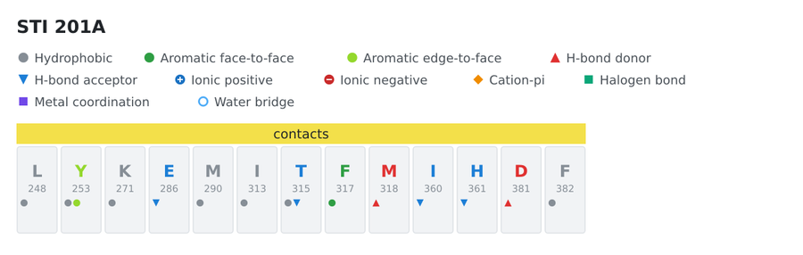
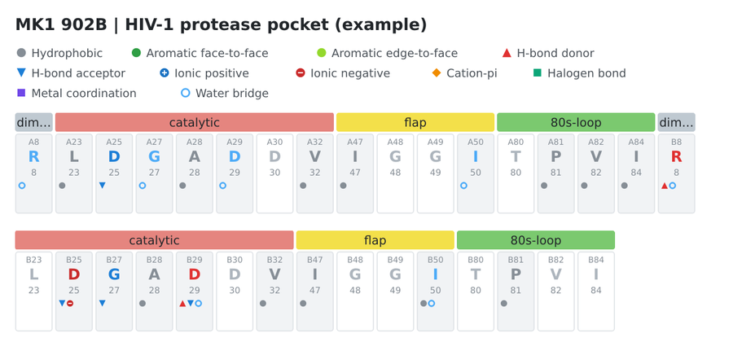

A fingerprint summarizes the interactions of one ligand as a table with one row per protein residue and one column per interaction class. It can be exported to CSV and JSON, drawn as an SVG figure (residues grouped by pocket region, one glyph per class) and shown in the GUI. It is the kind of table/figure used to compare how different ligands use the same binding pocket.

| Column | Meaning | Derived from |
|---|---|---|
hydrophobic |
hydrophobic contact | Hydrophobic contact (and Apolar contact (backbone)) |
face_to_face |
aromatic face-to-face | pi-stacking (parallel) |
edge_to_face |
aromatic edge-to-face | pi-stacking (T-shaped) |
hbond_donor |
the protein residue donates the hydrogen | Hydrogen bond, protein atom is the donor |
hbond_acceptor |
the protein residue accepts the hydrogen | Hydrogen bond, protein atom is the acceptor |
ionic_positive |
salt bridge with a positively charged residue | Salt bridge, charge of the protein atom |
ionic_negative |
salt bridge with a negatively charged residue | idem |
cation_pi |
cation-pi | Cation-pi |
halogen |
halogen bond | Halogen bond |
metal |
metal coordination | Metal coordination |
water_bridge |
water-mediated contact | Water bridge |
The first seven classes are the ones of the usual kinase-ligand fingerprint figures; the others are extras. Each cell of the table is a count of contacts (the JSON also gives the shortest distance per class). A salt bridge that is also an H-bond counts in the ionic class and in the donor/acceptor class. Clashes, repulsions and possible covalent bonds are not part of the fingerprint.
Caveats. The donor/acceptor role and the charge of each residue come from the same geometric heuristics as the interactions (histidine is never charged, amines and carboxylates follow the assumptions in the README). The classes are not guaranteed to coincide with the definitions of other tools: measure before treating them as equivalent.
ligint structure.pdb LIG --fingerprint csv one row per residue in contact
ligint structure.pdb LIG --fingerprint json
ligint structure.pdb LIG --fingerprint svg > figure.svg
ligint structure.pdb LIG --fingerprint figure.svg
ligint structure.pdb LIG --fingerprint report.csv
ligint structure.pdb LIG --fingerprint report.json
ligint structure.pdb LIG --fingerprint svg --pocket pocket.tsv with a pocket definition
--fingerprint csv|json|svg writes to standard output (legacy behavior). --fingerprint OUTPUT.csv|OUTPUT.json|OUTPUT.svg writes directly to the named file, inferring the format from its extension; an unsupported extension is rejected. The directory must already exist and the output file is overwritten. Diagnostics remain on standard error.--fingerprint replaces the interaction table (the service information goes to stderr, as with --csv).ligand column / one object per ligand). The SVG draws only the first
ligand and warns on stderr if there are more: select one with the chain and residue number.--pocket needs --fingerprint. Unknown formats, missing files and --pocket alone end with an error (code 1);
malformed lines of the pocket file are skipped with a warning.CSV columns: ligand,residue,chain,resi,position,region followed by one count column per class
(hydrophobic,face_to_face,edge_to_face,hbond_donor,hbond_acceptor,ionic_positive,ionic_negative,cation_pi,halogen,metal,water_bridge).
The pocket definition is data, not code: a text file that says which residues form the pocket, in which order and
how they are grouped. Without it the fingerprint lists only the residues in contact, sorted by chain and number. With it,
every position is listed (also those without interactions, as in the usual figures) in the order of the file, and the
contact residues that are not in the definition are appended and flagged (in_pocket = false).
# comment
@name HIV-1 protease pocket (example)
@color catalytic #e5857f
A 25 A25 catalytic ASP
A 50 A50 flap ILE
134A). The chain * (or -, _) matches any chain.@name sets the title and @color REGION #rrggbb sets the color of a region; other @ directives are ignored with a warning.An illustrative file is in examples/hiv-protease-pocket.tsv (the regions and
labels are an example of the format, not a reference mapping). It produces:

The Fingerprint tab shows the figure and the table. Load definition... in the control panel loads a pocket file (Clear removes it); the tab updates immediately. File > Export fingerprint... saves SVG, CSV or JSON (chosen by the extension). The figure needs the Qt Svg module; without it the GUI shows the table only.
#include <ligint/fingerprint.hpp>
ligint::Result r = ligint::analyzeFile("1HSG.pdb", opt);
ligint::PocketDefinition pocket;
std::vector<std::string> warnings;
ligint::loadPocketDefinition("pocket.tsv", pocket, warnings); // optional
ligint::Fingerprint fp = ligint::makeFingerprint(r.ligands[0], &pocket);
for (const auto& e : fp.entries)
std::cout << e.residue << " " << e.position << " " << e.counts[ligint::FpHBondDonor] << "\n";
std::string svg = ligint::fingerprintSvg(fp);
writeFingerprintCsv and writeFingerprintJson take a vector of fingerprints (one per ligand). The library does not
depend on Qt.
The fingerprints of several ligands on the same columns, one bit for each position and class, are in the interaction matrix. Pocket definitions for kinases come from KLIFS and for GPCRs from the generic residue numbers of GPCRdb.
The GUI now builds the protein 3D geometry when a PDB or mmCIF file is opened, before Analyze. The Interactions 3D viewer displays the imported protein using the current protein rendering style, initially framed on the entire structure. This preview does not generate ligand interactions, fingerprints or analysis results. After selecting a ligand and running Analyze, the same viewer switches to the normal protein–ligand interaction scene. Reset view returns to a whole-protein framing while in preview mode. Files without a reconstructible protein backbone still show the normal empty viewer until analysis.
Opening a PDB or mmCIF structure now displays all available HETATM ligands, in addition to the protein, before Analyze. Raw heavy-atom coordinates are displayed as colored spheres; this initial representation does not infer chemistry, bonds, or protein–ligand contacts. Click near a ligand atom in the 3D viewer to select that ligand in the GUI combo box, or change the ligand combo box to focus the selected ligand in 3D. At import the camera initially frames the entire protein. Selection and preview do not produce interaction or fingerprint results, and Analyze continues to run the usual chemical/interaction pipeline. The import data are maintained separately from analyzed results, and the preview option is opt-in so CLI ligand-listing behavior is unchanged. In the absence of a protein backbone, available ligand coordinates can still be displayed.
The import-only ligand visualization now reconstructs likely heavy-atom covalent bonds from distances and element-dependent covalent radii and coordination limits, rendering those connections in ball-and-stick. This is a geometrical approximation: PDB/mmCIF heavy-atom coordinates do not reliably provide ligand bond orders, formal charges, tautomeric states or protonation. The preview therefore does not claim to assign chemically verified bond orders or hydrogen bonds. Analysis and ligand chemical annotation remain independent.
Enable Preview: estimated hydroxyl H atoms to display illustrative hydrogen atoms for oxygen atoms with one reconstructed heavy-atom bond where a simple O–H group is plausible. These are labelled H_EST internally and placed along the outward O–neighbor vector as a visual approximation only. The mode is off by default; it intentionally does not protonate nitrogen sites, amide functions, ambiguous oxygens, ionized oxygens or entire molecules. For chemically accurate protonation, use an external chemically validated ligand representation or an explicit template rather than the import preview. The hydrogens are not included in interaction scoring.
The ligand preview has an optional Enrich ligand preview from CCD… command. It retrieves the official chemical-component definition from the RCSB PDB individual CCD file endpoint (https://files.rcsb.org/ligands/download/COMPONENT.cif) using the bundled standard-library helper tools/ccd_preview.py. Retrieved files are cached in ~/.cache/ligint/ccd. LigInt accepts atom-name-matched connectivity with CCD bond order values SING, DOUB, TRIP, and AROM; it falls back to its conservative geometric bonds if a definition is unavailable or no compatible heavy-atom bonds are found. The action does not run interaction analysis or modify deposited PDB coordinates.
CCD-based bonds describe the chemical-component dictionary connectivity, not necessarily the actual protonation/tautomer in a particular experiment. The separate Preview: estimated hydroxyl H atoms toggle remains illustrative and deliberately restricted; it does not yet generate chemically validated N–H or all O–H hydrogen coordinates. Proper donor-proton geometry needs a verified protonation model and stereochemistry before it can be used analytically.
The CCD helper uses an intentionally strict parser of the _chem_comp_bond loop; unusual layouts are safely rejected and left for geometric fallback. The online action is optional and requires Python 3. The unit test ccd_preview_offline checks bond order, aromaticity and cache behavior without any network access.
The 3D viewer now differentiates ordinary single, double and triple bonds with one, two and three cylindrical strokes. It detects short cycles of CCD AROM bonds and places aromatic interior accents towards each recognized ring, including simple fused systems. Graphics options → Ligand and residues → Aromatic bonds offers Aromatic dashed (default), Pseudo-Kekule (illustrative uninterrupted inner accents, not a formally assigned Kekulé resonance structure), or Simple bonds. CCD aromatic bonds must be available for this display; pure geometric fallback has unknown order and cannot assert aromaticity. These settings apply to normal post-analysis ligands as well as import previews when bond-order data exist.
The optional Preview: CCD-defined donor H (estimated geometry) checkbox shows estimated N–H or O–H positions only after Enrich ligand preview from CCD… has successfully validated the entire heavy-atom inventory, atom names and elements. Hydrogen counts come from hydrogen atoms explicitly bonded in the CCD chemical-component definition. Their 3D coordinates are constructed from local heavy-atom vectors as visualization-only approximations (not observed coordinates and not reliable for donor direction, stereochemistry or hydrogen-bond scoring). CCD protonation is one explicit component model and need not match solution pH or crystal protonation; the user must opt in. No arbitrary H is added to an unvalidated ligand, and existing interaction scoring is unaffected.
If CCD enrichment leaves a ligand unchanged, open the GUI Log: the program now reports the CCD component ID and whether lookup/parsing failed, atom names/elements disagree, or the matched bonds are unusable. The CCD CIF reader now accepts rows that wrap across physical lines. A deposited ligand with missing heavy atoms can receive only the subset of element-validated CCD bonds whose endpoints are present; this is labelled Partial CCD connectivity and estimated donor H atoms remain disabled. When the complete component matches, the full CCD bond topology and explicit CCD N–H/O–H counts can be used for the preview. Reopen the structure or rerun Enrich ligand preview from CCD… after updating.
When the GUI opens a PDB/mmCIF, it immediately displays the geometry-only protein and ligands and starts an asynchronous CCD lookup for the imported ligand component IDs. Cached CCD CIF definitions (~/.cache/ligint/ccd) are used without network traffic; uncached entries are fetched from RCSB. The window remains responsive and Analyze is not invoked. As matching CCD connectivity becomes available, the import preview is refreshed with bond orders and aromatic representation. A subsequent import cancels and invalidates stale lookups, so the previous structure cannot overwrite the new one. The existing Enrich ligand preview from CCD… button remains available for retry. Warnings and mapping coverage are reported in the Log. This source-checkout workflow requires Python 3.
ligint 0.10.1 manual